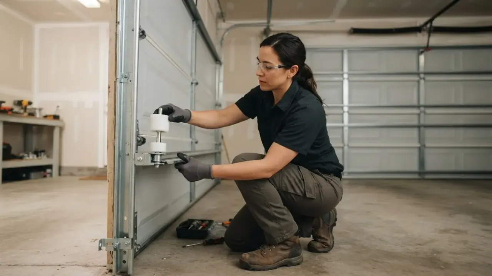
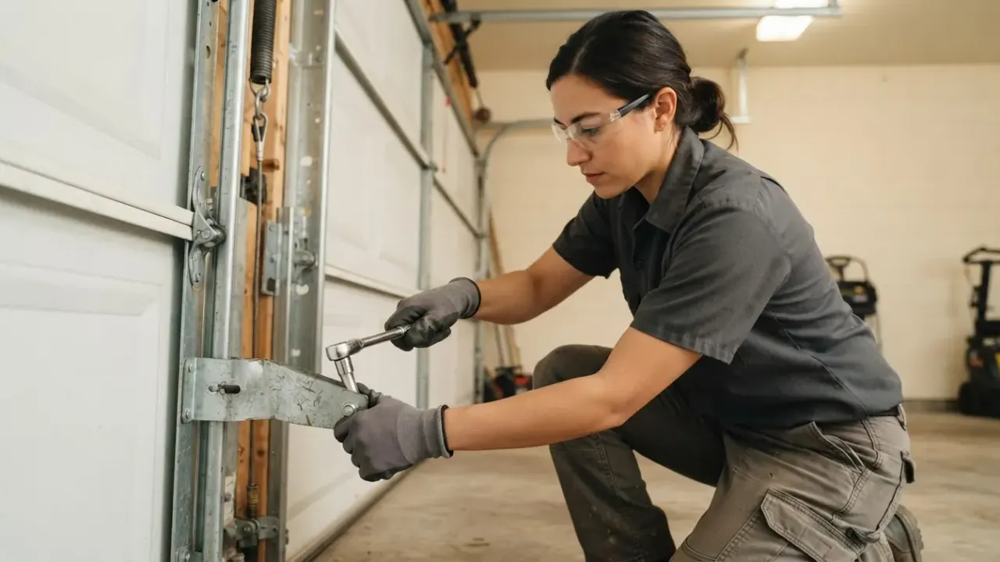

New rollers, quieter door, smooth travel every cycle
Garage Door Roller Replacement in Tampa
Roller replacement in Tampa is a quick way to quiet the grinding, rattling racket the door makes every time it opens. Old nylon rollers come out, the tracks and hinges are inspected, and new sealed-bearing rollers go in that roll smooth and quiet. A door that shudders, squeals, or jumps the track is a call away.
Live dispatcherUpfront optionsBacked workmanship
The basics
What Is Garage Door Roller Replacement?
The wheels that guide the door in its tracks are its rollers, and replacement means taking the worn ones out and fitting new ones. They work harder than almost any part of the door and wear down from daily use, rust, and Tampa humidity. A door that is noisy, jerky, or slow, or rollers that are cracked, flat-spotted, or loose in the track, all call for the same job. New rollers, nylon for quiet running or steel for heavy doors, are fitted one at a time with the door secured, then the door is tested for smooth, even travel.
What's included
What Our Roller Replacement Includes
Every roller job covers the parts and labor to get the door rolling smooth, plus the checks that keep it that way. Here is what is in the price and what is looked at while on site.
Full Roller Set
The whole set is replaced, not only the noisy roller. A standard two-car door carries 10 to 14 of them. Mixing new rollers with worn ones makes the door travel unevenly and wears the new set out fast.
Sealed-Bearing Nylon Rollers
Sealed-bearing nylon rollers rated for 10,000 cycles are used. They hold up better in Tampa humidity than open-bearing rollers and run quieter. Steel rollers are available for heavy doors at a small upcharge.
Track Alignment Check
Both tracks are checked with a level and any loose brackets are adjusted. Bent tracks are the second most common cause of roller failure, and minor bends are fixed on the spot with a track bender.
Hinge Inspection
Rollers mount to hinges, so every hinge is checked for bends and cracks. A worn hinge lets the roller wobble and pop out. Bad hinges are replaced during the same visit.
Opener Force Reset
Because new rollers roll easier, the opener needs less force to move the door. Auto-reverse is tested and the force limits on LiftMaster, Chamberlain, and Genie units are reset for the new set.
Full Cycle Test
The door runs three full cycles and every roller is watched travelling the track. The final test is watched together. Anything that rattles or drags is fixed before we leave.
Service overview
What Garage Door Roller Replacement in Tampa Involves
Roller replacement pulls the worn stems out of every hinge and presses in new rollers that ride the track without dragging. The rollers are the small wheels on the side of each door section, carrying the door's full weight up and down. Once the nylon goes flat or a bearing seizes, the door shudders, squeals, and can jump the track. The whole set is swapped together, not one roller at a time, so the door stays balanced.
Tampa roller replacement keeps coming up because the climate eats rollers fast. Salt air near the bay, humidity that never quits, and garages that hit 110 degrees in July all break down nylon and dry out bearings. Doors in South Tampa and Westchase need rollers every five to seven years. Trucks run across Hillsborough County six days a week.

How we workWe verify the cause, compare realistic options, and confirm the repair before we leave.
The service timeline
How Our Roller Replacement Process Works
A roller swap follows a set order, though the door's condition shapes the details. Five steps carry it from the first call to the final test.
Phone Diagnosis
Call and describe the noise or the symptom. Door brand, age, and whether it is sticking or off track are asked. Most roller jobs are booked same day or next morning, with a price range on the phone so there are no surprises.
On-Site Inspection
The tech checks all rollers, hinges, tracks, and the torsion springs before touching anything. Flat spots, cracked nylon, bent stems, and rust are looked for. The inspection takes 10 minutes and shows whether rollers alone are needed or rollers plus track work.
Safe Door Securing
The door is clamped and, on torsion systems, the springs are locked with winding bars before a single roller is pulled. This is the step that keeps everyone safe. Nobody works under a live spring.
Roller Swap
A roller removal tool pops each stem from its hinge, then new sealed-bearing rollers are pressed in. A standard 7-foot door takes 10 to 14 rollers. The swap runs 45 to 90 minutes depending on door size and how rusted the old stems are.
Track True and Test
Track alignment is checked with a level, bent sections are adjusted with a track bender, then the door runs three full cycles. The final test is watched together. If it still rattles, the reason is found before we pack up.
Timing questions
How long does garage door roller replacement take?
A full set of rollers usually takes one to two hours on site. The rollers are replaced one at a time from the bottom up, so the door stays supported throughout, and the job includes cleaning the tracks, lubricating the new rollers, and checking the balance and the opener force settings. If the tracks are bent or rusty and need work as well, the visit can run longer, and the technician will tell you before starting.
Tools & methods
Tools and Methods We Use
A roller swap is only as good as the gear behind it. These are the tools that let the job be done right the first time.
Garage Door Roller Removal Tool
It pulls the roller stem free of the hinge without bending the hinge or marking the door section. Faster and cleaner than a pry bar.
Garage Door Torsion Spring Winding Bars
Torsion spring tension is locked and released safely before work near the cables. No tech touches a live spring without these.
Garage Door Track Bender
Small bends in the vertical and horizontal track are straightened so new rollers ride true instead of wobbling.
Garage Door Panel Lift
The door section is supported while rollers are swapped on heavier doors, so nothing drops or shifts out of alignment.
Garage Door Torque Wrench
Hinge and bracket bolts are torqued to spec, so vibration after the swap does not loosen them.
Garage Door Sensor Alignment Tool
After track work, the photo eyes are lined up so the door reverses on contact, as UL 325 requires.
Garage Door Opener Remote Tester
The remote and wall mount keypad signal are confirmed after the opener force limits are reset.
Use cases
When to Book Roller Replacement
Roller swaps in Tampa follow a few familiar patterns. These are two recent ones, and how each was handled.

Westchase Off-Track Emergency Fixed
A roller popped out on a 2010 door in Westchase and the door jammed halfway open with a car trapped inside. One track section was bent and two hinges were cracked. The door was secured, reset on the track, all 14 rollers were replaced, the two cracked hinges were swapped, and the bent track was straightened.
Brandon Rental Property Roller Swap
Two rental units in Brandon had doors that squealed loud enough for tenant complaints. Rollers were dry, flat, and grinding against the track. One opener was overheating and shutting off mid-travel. Rollers on both doors were replaced in one trip, all moving parts were lubricated, and the opener force limits were reset.
Booking questions
Who replaces garage door rollers in Tampa?
We do, and we do it six days a week across Hillsborough County. Our techs carry rollers for 7-foot and 8-foot doors on every truck, so most jobs finish in one visit. We serve Downtown Tampa, South Tampa, New Tampa, Westchase, Brandon, Riverview, and the surrounding areas. Call and we will give you a price range on the spot.
Problems we solve
Roller Problems We Fix in Tampa
Worn rollers announce themselves in a few familiar ways. If any of these sound like your door, a roller swap is probably what it needs.
Door rattles and shakes the whole house
The worn rollers are pulled and sealed-bearing nylon ones are pressed in. The rattle stops on the first cycle. Opener bolts are tightened and the track brackets are checked while on site.
Roller popped out and door is off track
The door is secured, reset on the track, and the roller that failed is replaced. Then the track is trued and the door is tested through three cycles. Most off-track calls trace back to a worn roller.
Opener strains and shuts off mid-travel
New rollers drop the amp draw back to spec. Opener force limits are reset and the gears are checked. This one fix often saves a $450 opener replacement.
Door squeals loud enough to wake the neighborhood
The rollers are replaced and a lithium-based garage door lubricant goes on the hinges, rollers, and springs. The door runs quiet and the springs last longer.
About this service
Will new garage door rollers make my door quieter in Tampa?
Yes, in most cases, especially if you are moving from worn steel rollers to nylon ones. Much of the rattling and grinding from an old door comes from the rollers, and new ones make a clear difference on the first cycle. If the door is still noisy after the rollers are replaced, the cause is usually dry hinges or a loose track, which the technician can point out during the same visit.
Are nylon rollers better than steel rollers for Tampa homes?
For most Tampa homes, yes. Nylon rollers with sealed bearings run much quieter than steel, which matters when a bedroom sits over the garage, and the sealed bearings keep out the dust and humidity that wear steel rollers out. Steel rollers are tougher, but they are louder and their unsealed bearings rust faster in this climate. The technician will confirm the right type for your door weight before fitting.
Pricing process
What Roller Replacement Costs in Tampa
$185 - $450 depending on door size, roller material, and track condition
Number of Rollers
Roller counts follow door size: 10 on a single-car door, 12 to 14 on a two-car, and 18 or more on a three-car. Every extra roller adds parts and labour time.
Roller Material
Nylon rollers are standard and run $185 to $300 installed. Steel rollers cost $40 to $80 more but last longer on heavy wood doors. The recommendation follows door weight and location.
Track Condition
Tracks that are bent or loose are straightened before the new rollers go in. A minor bend is a quick fix; a badly damaged section needs replacing, which adds $80 to $200.
Cost factors at a glance
| Cost factor | What affects the price |
|---|---|
| Typical range on this page | $185 - $450 depending on door size, roller material, and track condition |
| Number of Rollers | Roller counts follow door size: 10 on a single-car door, 12 to 14 on a two-car, and 18 or more on a three-car. |
| Roller Material | Nylon rollers are standard and run $185 to $300 installed. |
| Track Condition | Tracks that are bent or loose are straightened before the new rollers go in. |
Ranges are the ones stated on this page; you get a written estimate before work starts.
Cost questions
How much does garage door roller replacement cost in Tampa?
Most roller replacement jobs in Tampa run $185 to $350 for a standard two-car door in 2026. That covers 10 to 14 new sealed-bearing rollers, labor, and a track check. Steel rollers cost a bit more than nylon. If your tracks are bent or the springs are shot, that adds to the bill, and we tell you before we start.
Customer reviews
What Tampa Customers Say
★★★★★
“My door sounded like a freight train every morning. I called these guys for roller replacement and they were out the next day. Tech showed me the old rollers, every one was flat on one side. New ones went in, he trued the track, and now the door is almost silent. Price was right where he quoted on the phone.”
★★★★★
“We had a roller pop out and the door got stuck halfway. They came out same day, replaced all 12 rollers, and fixed the bent track section. Took about two hours. The tech tested the safety sensors and set the opener force before he left. No more grinding noise, and the door closes smooth every time.”
★★★★★
“I manage four rental units and the garage doors take a beating. Called for roller replacement on two of them. Crew showed up on time, did both doors in one trip, and left me an invoice with the parts listed. Doors are quieter and the tenants stopped complaining. I will use them for the other two.”
Book with confidence
What to Look for Before You Book
Before booking a roller swap, a few simple checks keep a small job from turning into a surprise bill.
- The licence number is asked for before work starts, and matched against the name on the quote.
- Recent reviews are read for punctuality, pricing, and follow-up, not just the star rating.
- The price is given in writing before work starts, parts and labour included, with an answer on what happens if more work is found once the door is open.
- Warranty cover for the parts and the work, and how long it runs, is put in writing.
- A marked vehicle should arrive, with a technician who can say who they are and which company sent them.
- A safety test and a walkthrough at the end should be included in the price, so the door is seen working before they leave.
Do-it-yourself and safety questions
Can I replace garage door rollers myself in Tampa?
You can, but the risk is the springs. On a torsion system, the cables are under hundreds of pounds of tension, and one wrong move with the winding bars can cause serious injury. If you have an extension spring door and the tracks are straight, a careful DIYer can do it in about two hours. Otherwise, call us.
Choosing rollers
Choosing Replacement Rollers: Size, Stem, and Bearing
Replacement rollers are not one-size-fits-all, and fitting the wrong ones will make the door run worse than before. The three things that have to match are the wheel size, the stem length, and the bearing type. Most residential doors use 2-inch wheels, but heavier doors need larger wheels to carry the load, and a wheel that is too small will wear out quickly. The stem length has to match the hinge: a short stem in a long-stem hinge will wobble, and a long stem in a short-stem hinge will bind.
The bearing is the part that decides how long the roller lasts and how quiet it runs. Sealed ball bearings are the best choice for Tampa, because they keep dust and humidity out, and they are the reason nylon rollers run so much quieter than old steel ones. Unsealed bearings are cheaper, but they let in the dust and moisture that kill rollers in this climate. The technician measures the existing rollers and checks the hinges before ordering, so the replacements fit the door rather than being forced into it.
- Wheel size: most residential doors use 2-inch wheels; heavier doors need larger ones.
- Stem length: must match the hinge, or the roller will wobble or bind.
- Sealed bearings: the best choice for Tampa, because they keep dust and humidity out.
- Nylon vs steel: nylon runs quieter and resists rust, which is why it is usually recommended.
- Measured first: the existing rollers are measured before anything is ordered.
How long things last
How often should garage door rollers be replaced in Tampa?
Plan on every five to seven years in Tampa. Salt air near the bay, year-round humidity, and garages that hit 110 degrees break down nylon faster than the ten-year figure in most manuals. If your door rattles, shudders, or the rollers look flat on one side, they are due. We check them free during any service call.
How long do new garage door rollers last in Tampa?
Good quality rollers usually last 10 to 15 years on a door that is used normally, and longer if the door is serviced regularly. Nylon rollers tend to last well in Tampa because they do not rust, while steel rollers can rust if they are never lubricated. The life of a roller depends mostly on how often the door is used and whether the door is balanced, since an unbalanced door wears rollers unevenly.
Do all garage door rollers need to be replaced at the same time in Tampa?
It is usually best to replace them as a set, since rollers on the same door are the same age and have done the same work. Replacing only the worst one leaves old rollers that will fail soon after, and the door will not run evenly. If the door is new and only one roller was damaged, for example by an impact, replacing just that one is fine, and the technician will tell you which case applies to your door.
Should I replace all my garage door rollers at once?
In most cases, yes. The rollers have all done the same number of cycles, so when one fails, the rest are close behind, and a matched set runs more evenly and quietly than a mix of old and new. A single roller can be replaced on its own when the rest of the set is in good shape, and the technician will show you the condition of each one so you can decide.
The job
What Roller Replacement Looks Like on the Day
Roller replacement is a straightforward job, but it has to be done in the right order. The door is clamped in place and the opener is disconnected, so nothing can move while the rollers are out. The rollers are replaced one at a time, starting from the bottom, with each hinge unbolted, the old roller removed, and the new one fitted before moving to the next. Working one at a time keeps the door supported throughout, which is why the job is safe to do without taking the door apart.
Once all the rollers are in, the door is checked for smooth running. The tracks are wiped clean, the new rollers are lubricated, and the door is run through several full cycles. The balance is checked, because new rollers change the friction in the system, and the opener force settings are checked too, since a door that runs more freely needs less force. The whole job usually takes one to two hours, depending on how many rollers need replacing and whether the tracks need attention as well.
- Clamp and disconnect: the door is clamped and the opener disconnected before work starts.
- One at a time: rollers are replaced one by one from the bottom up, so the door stays supported.
- Tracks cleaned: the tracks are wiped clean, because a dirty track will wear new rollers.
- Lubricated: the new rollers are lubricated with a silicone-based lubricant.
- Balance and force: the balance and the opener force settings are checked after fitting.
After the fix
Breaking In New Rollers: What to Expect in the First Weeks
New rollers should make the door noticeably quieter from the first cycle, but there is a short settling period. The rollers need a few dozen cycles to seat properly in the tracks, and during that time the door may sound slightly different from one run to the next. That is normal, and it settles within a week or two of regular use. What is not normal is a new grinding noise, a roller that sticks at the same height every time, or a door that runs unevenly, and any of those should be reported, because they point at a track or hinge problem that the new rollers have revealed rather than caused.
Looking after new rollers is simple. Keep the tracks clean, lubricate the rollers twice a year with a silicone-based lubricant, and do not grease the tracks. Avoid the temptation to spray the rollers with a solvent-based product, because it strips the lubricant from the bearings. With that care, a set of sealed-bearing nylon rollers should last 10 to 15 years on a typical Tampa door, and the door should stay quiet for most of that time.
- Quieter from day one: new rollers should make an immediate difference to the noise.
- Settling period: a few dozen cycles to seat properly, settling within a week or two.
- Report new noises: grinding or sticking after fitting points at a track or hinge problem.
- Twice-yearly lubrication: silicone-based lubricant on the rollers, and clean tracks.
- Avoid solvents: a solvent spray strips lubricant from the bearings and shortens their life.
Related services
Related Services

Garage Door Repair
When rollers are not the only problem, general garage door repair covers tracks, hinges, cables, and openers. The whole door is diagnosed in one visit, so two trips to Tampa are not paid for.
Garage Door Spring Repair
Worn rollers strain torsion springs and shorten their life. When a spring has snapped, it is replaced with the correct cycle-rated spring for the door weight and the rollers are checked while on site.
Garage Door Opener Repair
Dragging rollers burn out opener gears and logic boards. LiftMaster, Chamberlain, Genie, and Craftsman openers are repaired, then the force limits are set to match the new rollers so the motor runs cool.Ready when you are
Book Garage Door Roller Replacement in Tampa Today
A garage door contractor serving Tampa and Hillsborough County, licence number available on request. Call now and the price range comes on the spot, with a same-day slot when one is open. The door will roll quiet again.

Talk with the local team
Request Garage Door Roller Replacement
Call, text or email and a real person answers, day or night. Tell us what the door is doing and we will give you a price range on the spot plus the soonest arrival window. Most calls placed before mid-afternoon get a same-day visit anywhere in Hillsborough County.